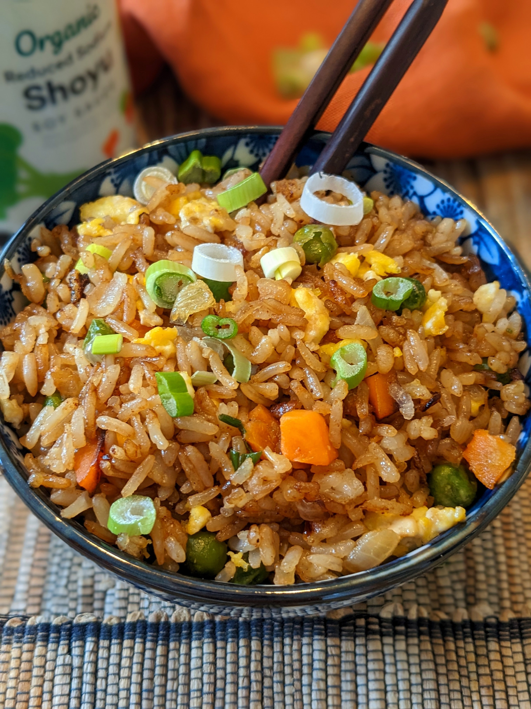

Quick Fried Rice
Home

Description
This is my go to for a quick meal at any time of the day. It uses instant rice instead of cold rice, so if you don't generally have rice already cooked, you can still have fried rice whenever you want. All you need is about 30 minutes, and you can have a delicious, cheaper version of takeout that the whole family can enjoy.
This recipe is also extremely versatile and can be customized however you like, whether adding a protein source such as chicken or tofu, or changing the types of vegetables included.
Ingredients
- 1 cup Instant Rice
- 3/4 cup of chicken broth or water
- 3 tbsp of high heat oil such as Canola Oil
- 1 small onion diced
2 eggs
- 1/2 cup (optional) of frozen peas and carrots combined
- 3 tbsp of soy sauce
- Pepper, to taste
Steps
- In a small pot, bring the water or broth to a boil. Once it is boiling add the Instant Rice, cover, and remove from heat. Let sit for 5 minutes.
- In a separate pan, heat the oil, and add the onion, sauteeing until translucent.
- Add the eggs and scramble them with the onions.
- Add in the cooked rice and optional peas and carrots. Fry together until carrots and peas are warm.
- Add in the soy sauce and pepper. Fry for another 2-3 minutes, and then serve.